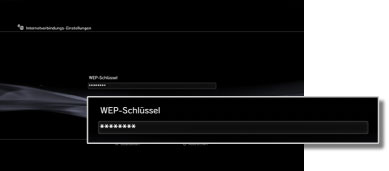

Internetverbindungs-Einstellungen (drahtlose Verbindung)
Diese Einstellung steht nur auf PS3™-Systemen zur Verfügung, die mit der WLAN-Funktion ausgestattet sind.
Sie können die Methode für das Herstellen der Verbindung zum Internet auswählen. Die Internetverbindungs-Einstellungen hängen von der Netzwerkumgebung und den verwendeten Geräten ab. Im Folgenden wird eine typische Konfiguration erläutert, wenn die Internetverbindung drahtlos erfolgt.
1. |
Überprüfen Sie, ob die Einstellungen für den Access Point abgeschlossen sind.
Vergewissern Sie sich, dass sich in der Nähe des Systems ein Access Point befindet, der mit einem Netzwerk mit Internet-Service verbunden ist. Die Einstellungen für den Access Point werden im Normalfall mit einem PC vorgenommen. Weitere Informationen dazu erhalten Sie bei der Person, die den Access Point eingerichtet hat oder pflegt.
|
2. |
Vergewissern Sie sich, dass kein Ethernetkabel an das PS3™-System angeschlossen ist.
|
3. |
Wählen Sie  (Einstellungen) > (Einstellungen) >  (Netzwerk-Einstellungen). (Netzwerk-Einstellungen).
|
4. |
Wählen Sie [Internetverbindungs-Einstellungen].
Wählen Sie [Ja], wenn ein Bestätigungsbildschirm erscheint, dass die Verbindung zum Internet getrennt wird.
|
5. |
Wählen Sie [Einfach].

|
6. |
Wählen Sie [Drahtlos].

|
7. |
Wählen Sie [Scannen].
Eine Liste der Access Points innerhalb der Reichweite des PS3™-Systems wird angezeigt.
Je nach dem verwendeten Modell des PS3™-Systems steht die Option [Automatisch] zur Verfügung. Wählen Sie [Automatisch], wenn Sie einen Access Point verwenden, der die automatische Konfiguration unterstützt. Wenn Sie die Anweisungen auf dem Bildschirm befolgen, werden die erforderlichen Einstellungen automatisch vorgenommen. Informationen zu Access Points, die die automatische Konfiguration unterstützen, erhalten Sie bei Ihrem Händler vor Ort.
|
8. |
Wählen Sie den zu verwendenden Access Point aus.
Eine „SSID“ ist ein Kennname, der Access Points zugewiesen wird. Wenn Sie die zu verwendende SSID nicht kennen oder die SSID nicht angezeigt wird, wenden Sie sich an die Person, die den Access Point eingerichtet hat oder pflegt.
|
9. |
Überprüfen Sie die SSID für den Access Point.
|
10. |
Wählen Sie die zu verwendenden Sicherheits-Einstellungen aus.
Welche Sicherheits-Einstellungen erforderlich sind, hängt vom Access Point ab. Wenden Sie sich an die Person, die den Access Point eingerichtet hat oder pflegt, wenn Sie wissen möchten, welche Einstellung Sie auswählen sollen.
|
11. |
Geben Sie den Verschlüsselungsschlüssel ein.
Der Verschlüsselungsschlüssel wird als [*] angezeigt. Wenn Sie den Verschlüsselungsschlüssel nicht kennen, erhalten Sie ihn bei der Person, die den Access Point eingerichtet hat oder pflegt.

Wenn Sie den Verschlüsselungsschlüssel eingegeben und die Netzwerkkonfiguration bestätigt haben, wird eine Liste mit Einstellungen angezeigt.
Je nach der verwendeten Netzwerkumgebung sind möglicherweise weitere Einstellungen, wie z. B. für PPPoE, Proxy-Server oder IP-Adresse, erforderlich. Näheres zu diesen Einstellungen finden Sie in den Informationen von Ihrem Internet-Serviceprovider oder in den mit dem Netzwerkgerät gelieferten Anweisungen.
|
12. |
Speichern Sie Ihre Einstellungen.
|
13. |
Testen Sie die Verbindung.
Wenn Sie [Verbindung testen] auswählen, versucht das System, eine Verbindung zum Internet herzustellen.
|
14. |
Sehen Sie sich die Ergebnisse des Verbindungstests an.
Wenn die Verbindung erfolgreich hergestellt wurde, werden Informationen zum Netzwerk angezeigt.
|
Anmerkungen
- Wenn die Verbindung fehlschlägt, überprüfen Sie anhand der Anweisungen auf dem Bildschirm die Einstellungen. Schlagen Sie dazu auch in den Informationen von Ihrem Internet-Serviceprovider und in den mit dem verwendeten Netzwerkgerät gelieferten Anweisungen nach.
- Wenn Sie die Verbindung unmittelbar nach dem Auswählen von [Automatisch] > [AOSS™] in Schritt 7 testen, sind die Routereinstellungen möglicherweise noch nicht abgeschlossen und die Verbindung schlägt fehl. Warten Sie etwa 1 oder 2 Minuten, bevor Sie die Verbindung testen.